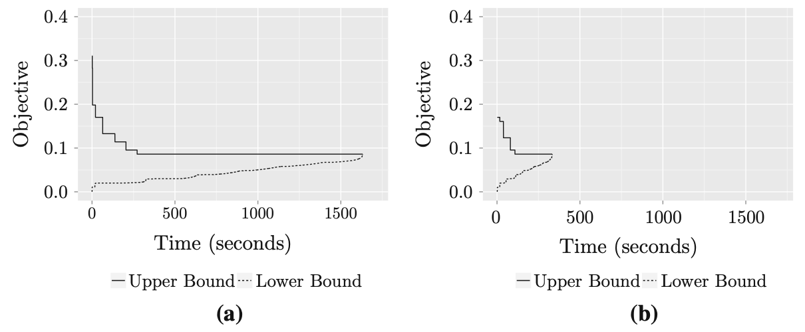
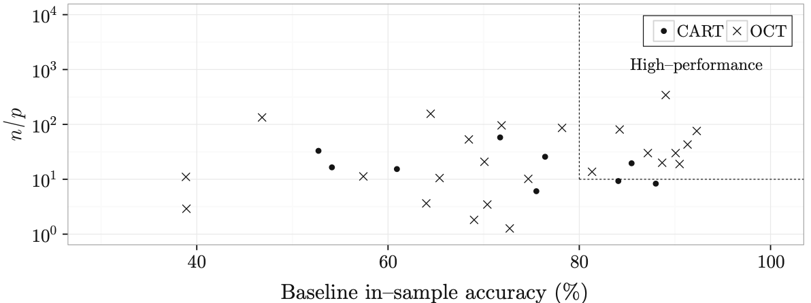

- 深さ 2 で +1.86 ポイントUCI の 53 データで、テストデータでの精度の平均が CART より高かった幅（p ≈ 10−6）。OCT が上回ったのは 25 データ、CART は 9 データ、残り 19 データは同じだった。
- OCT-H は深さ 2 で 81.0%深さを制限しない CART（最大で深さ 10）の平均 80.7% を上回った。深さ 4 の OCT は 80.4% だった。
- 約 8,000 億倍1991〜2015 年の MIO ソルバーの高速化（約 140 万倍）と計算機の高速化（約 57 万倍）を掛けた値。論文はこれを、最適な木を求める研究を見直す動機に挙げる。
CART は分岐を 1 つずつ決めるので、弱い分岐のあとに続く強い分岐を見落とすことがある
CART（Breiman ら 1984）は根から始めて、各ノードで不純度を最も下げる分岐を選び、子ノードで同じことを繰り返す。どの分岐もそのあとに続く分岐の影響を考えずに決まる。木の複雑さへの罰則を育てる途中でかけると、弱い分岐のあとに強い分岐が続く組合せを選べないので、CART は深く育ててから罰則で剪定する。最終的な目的は誤分類率なのに、育てる段階では不純度を使うのもこの手順のためである。
Breiman ら自身も、木全体を一度に最適にする方法は当時の計算機では現実的でないと書いていた。最適な二分決定木を求める問題は NP 困難である（Hyafil & Rivest 1976）。論文はこの見方を MIO ソルバーの進歩を踏まえて見直す。1991 年の CPLEX 1.2 から 2015 年の Gurobi 6.5 までに、同じ計算機でのソルバーの速さは約 140 万倍になり、計算機の高速化（約 57 万倍）と合わせると約 8,000 億倍になる。
CART が貪欲に解いている「誤分類 ＋ α × 分岐の数」を、そのまま 1 つの最適化問題として書く
学習データは \(n\) 点の \((x_i, y_i)\) で、特徴量は \(x_i \in [0,1]^p\) に正規化し、ラベルは \(y_i \in \{1, \dots, K\}\) とする。論文は CART の手順から、CART が解こうとしている問題を次のように書き出す。
\(R_{xy}(T)\) は木 \(T\) の学習データでの誤分類、\(|T|\) は分岐ノードの数、\(N_x(l)\) は葉 \(l\) に入る点の数である。α と \(N_{\min}\) は CART の複雑さのパラメータと葉の最小サイズにそのまま対応する。これを一度に解けば、不純度も剪定もいらない。論文は CART を基準に選んだのは便宜上で、C4.5 を基準にしても同じように定義できると述べている。
深さ D の完全な二分木を用意し、どこで分岐するか、各点がどの葉に入るかを 0-1 変数で表す
深さ \(D\) の完全な二分木には \(2^{D+1}-1\) 個のノードがある。上半分を分岐ノード \(\mathcal{T}_B\)、残りを葉 \(\mathcal{T}_L\) とする。分岐ノード \(t\) は \(a_t^\top x < b_t\) なら左、そうでなければ右へ点を送る。OCT は次の変数で木を表す。
- \(d_t \in \{0,1\}\)：ノード \(t\) で分岐するか。分岐しないときは \(a_t = 0,\ b_t = 0\) として全点を右に送る。親が分岐しないなら子も分岐しない（\(d_t \le d_{p(t)}\)）。
- \(a_{jt} \in \{0,1\}\)、\(\sum_j a_{jt} = d_t\)：分岐に使う特徴量を 1 つ選ぶ（単変量の分岐）。しきい値は \(0 \le b_t \le d_t\)。
- \(z_{it} \in \{0,1\}\)：点 \(i\) が葉 \(t\) に入るか。各点はちょうど 1 つの葉に入り、点の入る葉には \(N_{\min}\) 点以上が必要である。
- \(c_{kt} \in \{0,1\}\)、\(L_t \ge 0\)：葉 \(t\) が予測するクラスと、その葉の誤分類の数。
点 \(i\) を葉 \(t\) に入れるなら、\(t\) へ至る道の分岐をすべて満たす必要がある。これを big-M の制約で書く。\(\mathcal{A}_L(t)\)、\(\mathcal{A}_R(t)\) は根から \(t\) までの道で左、右に進んだ祖先の集合である。
「より小さい」という厳密な不等号はソルバーで扱えないので、小さな定数 \(\epsilon\) を足して書き換える。\(\epsilon\) が小さすぎると数値的に不安定になるので、特徴量 \(j\) ごとに、値を並べたときの隣り合う異なる値の最小の差を \(\epsilon_j\) にする。目的関数は誤分類を全体の多数派クラスで予測したときの誤分類 \(\hat L\) で割り、α の効き方をデータの大きさによらないようにする。
問題の難しさは主に 0-1 変数 \(z_{it}\) の数 \(n \cdot 2^D\) で決まる。論文は、数千点のデータで深さ 4 までなら数分で質の高い解が得られると報告している。
CART の解を初期解として渡すと、最適解に早く着き、最適性の証明にかかる時間も短くなる
MIO ソルバーは良い実行可能解を最初に渡されると、探索木を多く刈り込めて速くなる。CART の分岐から残りの変数の値を決めれば、OCT の実行可能解になる。Wine データ（\(n = 178\)、\(p = 13\)）の深さ 2 では、初期解なしだと最適解が見つかるまで 270 秒、その最適性の証明にさらに 1,360 秒かかった。CART の解を初期解にすると、同じ最適解が 105 秒で見つかり、証明は 230 秒で終わった（図2）。最適解の目的関数の値は CART の解のおよそ半分で、CART の解が学習データ上でも最適から遠いことがある。
論文はこの例から、時間の大半は最適性の証明に使われると指摘する。そこで実験では時間制限で計算を打ち切っており、実データの結果の多くには最適性の証明がない。浅い木の解は深い木の初期解になるので、深さを 1 から順に上げて解く。α の調整では、罰則の代わりに分岐の数の上限 \(C\) を置いた問題を \(C = 1, \dots, 2^D - 1\) について解き、検証データで最良の解を選んで、その解が最適になる α の区間の中点を採用する。

分岐の係数の整数制約を外すだけで多変量の木になり、0-1 変数の数は OCT と変わらない
多変量（斜め）の分岐は複数の特徴量の線形結合で点を分ける。貪欲法では各ノードの分岐を決めるだけでも列挙できず難しいが、MIO で見ると OCT の制約を緩めるだけで済む。OCT-H は \(a_t \in [-1, 1]^p\) とし、\(\sum_j |a_{jt}| \le d_t\)、\(-d_t \le b_t \le d_t\) に置き換える。厳密な不等号の書き換えには、単変量のときのような賢い選び方ができないので、小さな定数 \(\mu = 0.005\) を使う。
罰則は分岐の数ではなく、分岐に使った特徴量の総数にする。そのために特徴量 \(j\) を分岐 \(t\) で使うかを表す 0-1 変数 \(s_{jt}\) を足すが、\(a_{jt}\) は連続変数になるので、0-1 変数の数は OCT と同じである。論文はこのため OCT-H も OCT と同じくらい解きやすいとする。初期解には 1 回だけ分岐する OCT-H の小さな問題をノードごとに解いて上から作る貪欲な木を使う。
真の木からデータを作ると、OCT は CART より真の木に近い構造の木を学習し、ラベルの雑音にも強かった
Murthy & Salzberg（1995）の実験にならい、ランダムに作った真の決定木でラベルを付けたデータから木を学習し、真の木と比べた。比較したのは OCT、通常の CART、真の木と同じ深さで打ち切った CART である。真の木 10 本 × データ 10 組の 100 回の平均をとった。
真の木の深さを 2〜4 に変えた実験（\(n = 100\)、\(p = 2\)、雑音なし）では、テストデータでの精度は CART と OCT でほとんど同じだったが、葉の数や深さは OCT のほうが真の木にほぼ一致した。深さを打ち切った CART はどの実験でも他の 2 つより大きく劣った。ラベルの 20% に雑音を入れた実験では、テストデータでの精度が CART 95.43% に対して OCT 97.34% だった。論文はこれらの結果を、最適な方法は学習データに過学習しやすいという通念への反証としている。特徴量に雑音を入れた実験では、両者に差はなかった。
UCI の 53 データでは、どの深さでも OCT が CART を上回り、OCT-H はさらに大きく上回った
各データを学習 50%、検証 25%、テスト 25% に分け、分け方を変えて 5 回繰り返した平均を報告する。\(N_{\min}\) はデータの点数の 5% に固定した。比較相手は同じ \(N_{\min}\) で α を調整し、同じ深さに打ち切った CART（R の rpart）である。OCT は Julia と JuMP で書き、Gurobi 6.5 で解いた。時間制限は OCT がおおむね 30 分（大きなデータでは最大 2 時間）、OCT-H が 5〜15 分である。
| 最大の深さ | CART | OCT | OCT-H（貪欲） | OCT-H |
|---|---|---|---|---|
| 1 | 71.0 | 71.3 | 74.5 | 76.1 |
| 2 | 76.2 | 78.0 | 78.7 | 81.0 |
| 3 | 78.8 | 79.5 | 79.9 | 82.3 |
| 4 | 79.8 | 80.4 | 80.6 | 82.9 |
表1 53 データでのテストデータの精度の平均（%）（論文 Table 6）。「OCT-H（貪欲）」は分岐を上から 1 つずつ OCT-H で決めた木で、多変量の貪欲法の参考値である。
CART との差は深さ 1 から 4 で +0.36、+1.86、+0.73、+0.62 ポイントで、どれも統計的に有意だった（p 値は 0.0141、約 \(10^{-6}\)、0.0065、0.0279）。OCT が上回ったデータの数は、どの深さでも CART の 1.5 倍以上だった（論文 Table 8）。深いほど差が小さいことについて、論文は時間制限のなかで深い木の問題を解き切れていないためだろうと述べている。OCT-H と CART の差は +5.12、+4.88、+3.59、+3.12 ポイントで、貪欲な OCT-H との差も平均で 2 ポイントを超えた。
論文はどんなデータで差が出やすいかも調べた。CART の精度が 80% 以上で \(n/p \ge 10\) のデータでは、勝敗がついたときはほとんど OCT が勝ち、平均の上積みは 1.2〜1.3 ポイントだった（図3）。OCT-H は CART の精度が 70% 以下か \(p \le 10\) のデータで 4〜7 ポイント上回った。100 本のランダムフォレストの平均精度は 85.8% で、深さ 4 の CART、OCT、OCT-H よりそれぞれ約 6、5、3 ポイント高い。ただしクラスが 2〜3 で \(p \le 25\) の 31 データに限ると、OCT-H（85.2%）とランダムフォレスト（85.1%）は同程度だった。

深さを決めた木を MIO で一度に解く系統の出発点で、定式化の大きさと LP 緩和の弱さが後続の研究の課題になった
- 解く問題：CART と同じ「誤分類 ＋ α × 分岐の数」を、葉の最小サイズの制約つきで解く。深さ \(D\) は上限として与え、分岐しないノードも許す。
- 分岐：単変量（OCT）と多変量（OCT-H）を同じ枠組みで扱う。特徴量は \([0,1]\) に正規化した連続値のままで、二値化は前提にしない。
- 規模：0-1 変数がデータ数 × 葉の数だけあり、数千点・深さ 4 程度が実用の範囲だった。論文自身も、数万点のデータでは質の高い解を得るのに時間がかかりすぎたと書いている。
（解説者の注）同じ年の Verwer & Zhang（2017）も整数最適化で決定木を学習しており、のちの BinOCT は変数の数をデータ数にほぼ依存させない定式化で、Aghaei らはフローにもとづく LP 緩和の強い定式化で、Zhu らは多変量の木をデータの絞り込みで大きなデータに広げる方向で、それぞれこの規模の問題に取り組んでいる。
@article{bertsimas2017optimal,
title = {Optimal classification trees},
author = {Bertsimas, Dimitris and Dunn, Jack},
journal = {Machine Learning},
volume = {106},
number = {7},
pages = {1039--1082},
year = {2017},
doi = {10.1007/s10994-017-5633-9}
}
ページの数値と図は、著者が公開している Machine Learning 掲載版の PDF（Author's personal copy）による。書誌は Crossref で確認した。